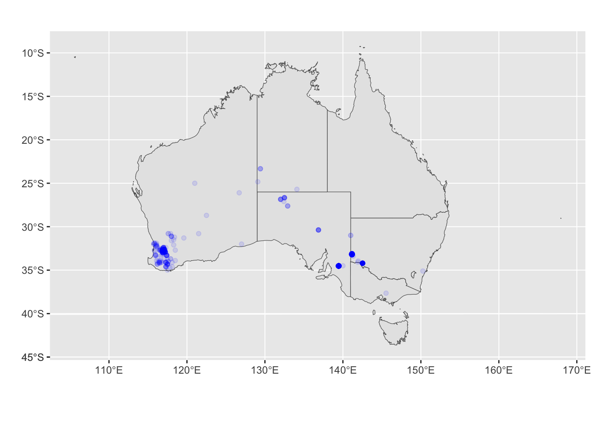
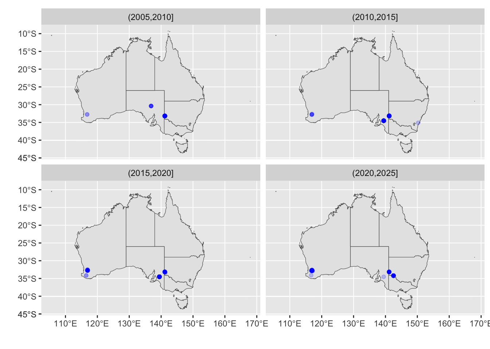
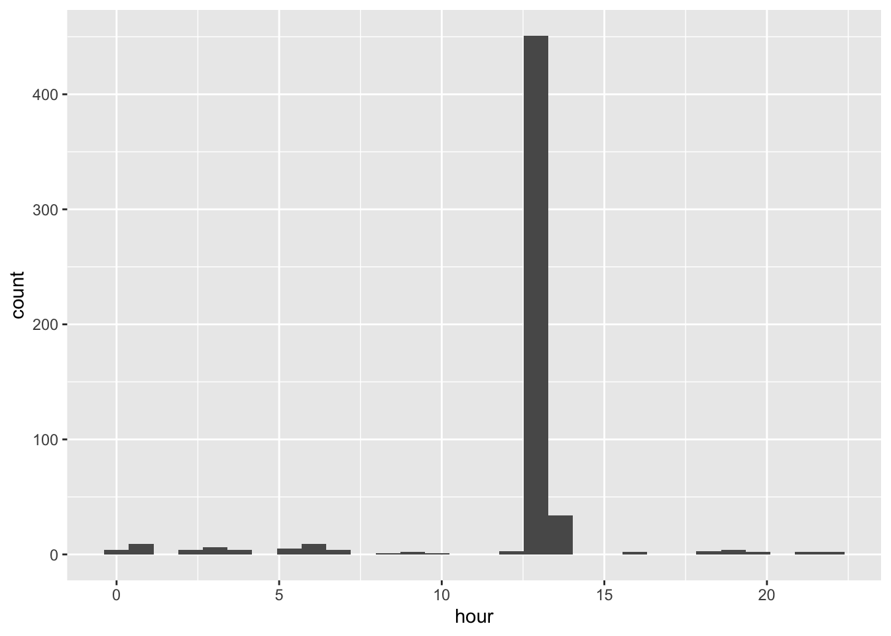
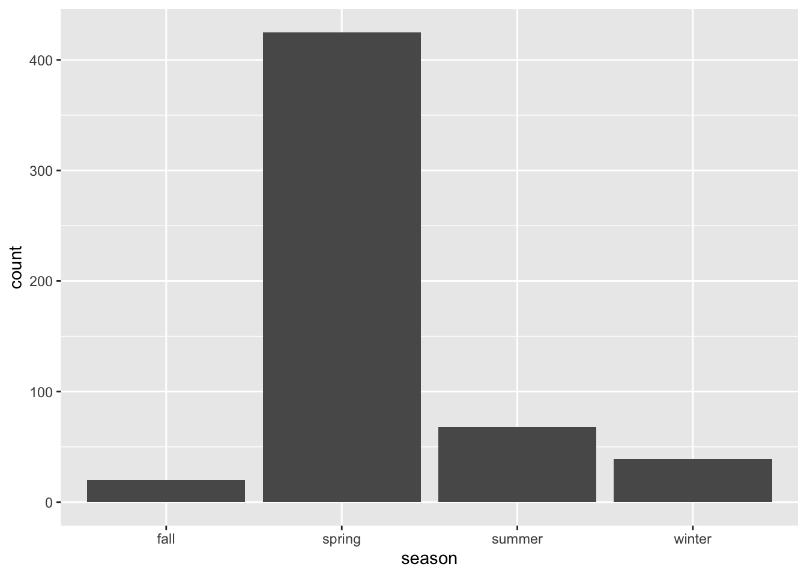
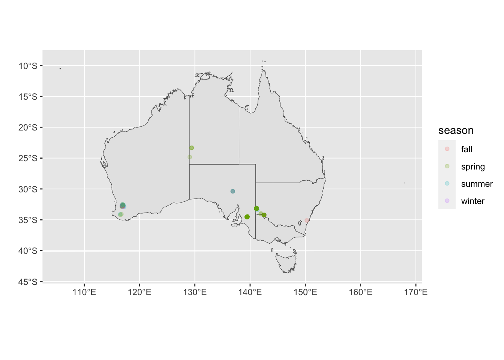
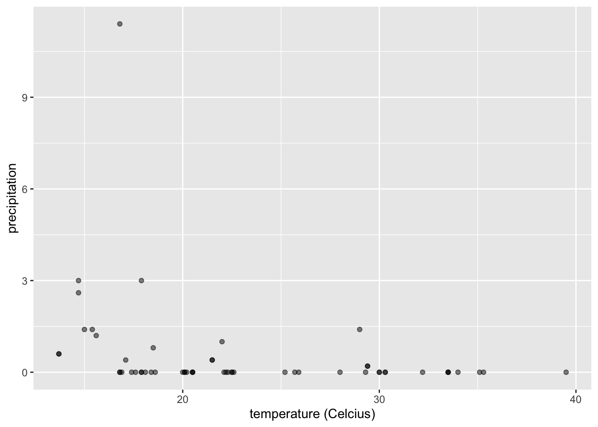
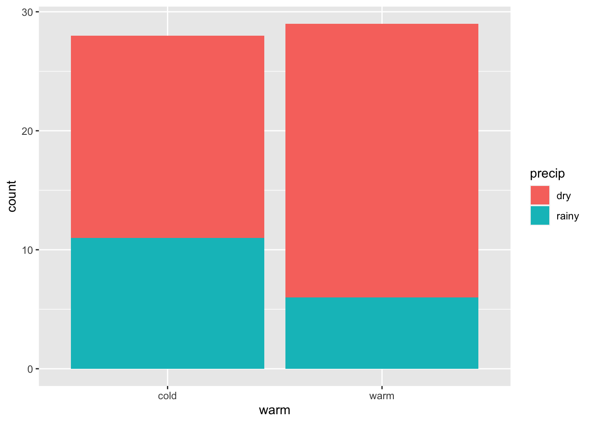
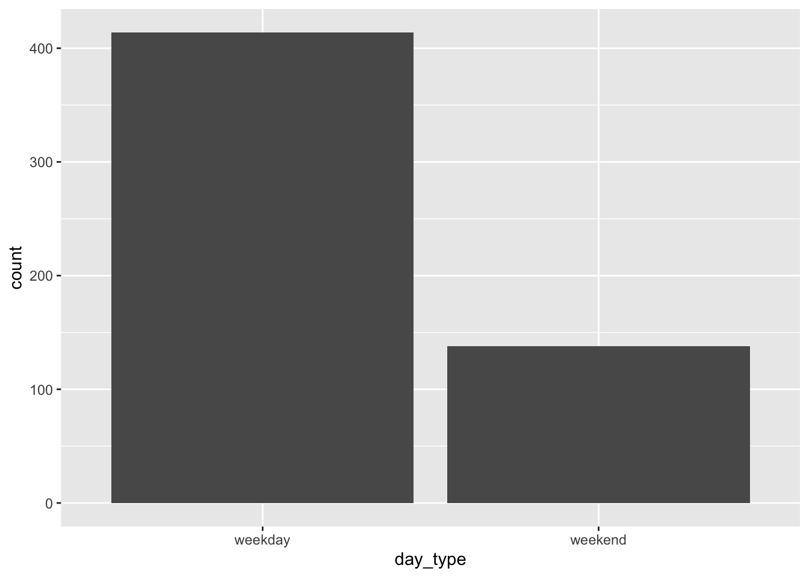

library(tidyverse)
library(tidytext)
library(praise)
library(ozmaps)
library(sf)Numbats in Australia
The Data
The data this week comes from the Atlas of Living Australia. Thanks to Di Cook for preparing this week’s dataset!
This Numbat page at the Atlas of Living Australia talks about these endangered species in greater detail.
numbats <- read_csv("numbats.csv") |>
mutate(decade = floor(year/10) * 10) |>
mutate(fiveyear = cut(year, breaks = seq(1850, 2025, 5))) |>
mutate(quarter = lubridate::quarter(eventDate)) |>
mutate(season = case_when(
quarter == 3 ~ "winter",
quarter == 1 ~ "summer",
quarter == 2 ~ "fall",
quarter == 4 ~ "spring"
))Questions
From the #TidyTuesday website, we have questions to answer!
- Where do you find numbats in Australia?
- Was the distribution more widespread historically? (You may need to exclude zoo reported observations.)
- What time of day do numbat sightings occur?
- Are they more frequent in the summer or winter?
- Are numbats seen more on sunny and warm days than cloudy, wet, cold days?
- Do sightings happen more on week days than weekends?
Where do numbats live?
library(ozmaps)
library(sf)
oz_states <- ozmaps::ozmap_states
ggplot(oz_states) +
geom_sf() +
coord_sf() +
geom_point(data = numbats, aes(y = decimalLatitude, x = decimalLongitude), alpha = 0.1, color = "blue") +
xlab("") +
ylab("") 
Distribution of numbats historically
Doesn’t seem like the distribution of sightings has changed much over the last 25 years.
ggplot(oz_states) +
geom_sf() +
coord_sf() +
geom_point(data = filter(numbats, !is.na(decade) & year > 2000), aes(y = decimalLatitude, x = decimalLongitude), alpha = 0.2, color = "blue") +
xlab("") +
ylab("") +
facet_wrap( ~ fiveyear)
What time of day are sightings?
Seems like the vast majority of the sightings are at 1pm. That seems very unsatisfactory because it feels like an odd data recording rather than an actual 1pm sighting.
numbats |>
ggplot(aes(x = hour)) +
geom_histogram()
More frequent in summer or winter?
It seems like most of the sightings happened in spring (October, November, December).
numbats |>
filter(!is.na(season)) |>
ggplot() +
geom_bar(aes(x = season))
ggplot(oz_states) +
geom_sf() +
coord_sf() +
geom_point(data = filter(numbats, !is.na(season)),
aes(y = decimalLatitude, x = decimalLongitude, color = season),
alpha = 0.2) +
xlab("") +
ylab("") 
Sunny & Warm or Cold & Cloudy days for sightings?
We only have temperature information for sightings in the Dryandra Woodland, so we’ll first subset the observations to include only those sightings. Even within the Dryandra sightings, there is a lot of missing weather information!
Seems that the information below describes that there is less precipitation on warm days (more than it describes anything about sightings).
dryandra <- numbats |>
filter(dryandra) |>
mutate(warm = case_when(
tmax >= 21 ~ "warm",
tmax < 21 ~ "cold",
TRUE ~ NA_character_
)) |>
mutate(precip = case_when(
prcp > 0 ~ "rainy",
prcp == 0 ~ "dry",
TRUE ~ NA_character_
))dryandra |>
filter(!is.na(warm) & !is.na(precip)) |>
ggplot() +
geom_point(aes(x = tmax, y = prcp), alpha = 0.5) +
ylab("precipitation") +
xlab("temperature (Celcius)")
dryandra |>
filter(!is.na(warm) & !is.na(precip)) |>
ggplot() +
geom_bar(aes(x = warm, fill = precip))
Weekdays or weekends?
25% of the sightings are on weekends, but 2/7 is 28.5%. So the weekend sightings don’t seem particularly different, proportionally, than we would expect if the sightings were uniformly spread out across the weeks.
numbats |>
mutate(day_type = case_when(
is.na(wday) ~ NA_character_,
wday == "Sat" ~ "weekend",
wday == "Sun" ~ "weekend",
TRUE ~ "weekday"
)) |>
filter(!is.na(day_type)) |>
ggplot() +
geom_bar(aes(x = day_type))
numbats |>
mutate(day_type = case_when(
is.na(wday) ~ NA_character_,
wday == "Sat" ~ "weekend",
wday == "Sun" ~ "weekend",
TRUE ~ "weekday"
)) |>
filter(!is.na(day_type)) |>
select(day_type) |>
table()day_type
weekday weekend
414 138 praise()[1] "You are fantabulous!"